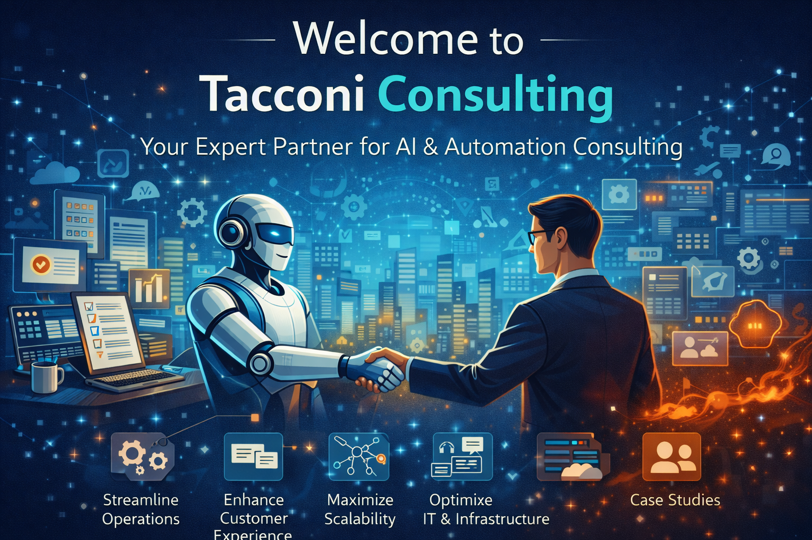

About
Tacconi Consulting Ltd provides platform transformation engineering—from infrastructure to software—with a focus on automation, reliability, and clear handover.
How we work
Same discipline for infrastructure and software:
- Discovery — Understand constraints, goals, and current state.
- Architecture — Propose a target design and incremental path.
- Implementation — Build with automation and CI from the start; documentation and runbooks are deliverables.
- Handover — Your team can operate and extend the system; no black boxes.
For AI-assisted work we add guardrails: human-in-the-loop, tests first, CI gates before merge. We do not ship generated code without review and validation.
Contact
hello@tacconiconsulting.com — Book a call or discuss a project.